Motivation
- Want to build LLM applications?
- Wondering what is the most cost effective way to learn and build them in cloud?
Think OpenSource LLM.
Think Serverless
Purpose of this Presentation
Let us see how the intermingling of 2 concepts - Serverless + Open Source LLMs - help you build demo-able PoC LLM applications, at minimal cost.
#LLMOps
#MLOps
#AWSLambda
#LLMonServerless
#OpenSourceLLMsLLM Recipes we are discussing today
- A Lambda to run inference on a purpose-built Transformer ML Model
- A Lambda to Anonymize Text using a Huggingface BERT Transformer-based Language Model for PII De-identification
- A Lambda to run inference on a purpose-built Transformer ML Model
- A Lambda to run a Small Language Model like Microsoft’s Phi3
- A Lambda to run a RAG Implementation on a Small Language Model like Phi3
- A Lambda to invoke a LLM like Mistral 7B Instruct that is running in a SageMaker Endpoint
1. Lambda to Anonymize Text
- A Lambda to run inference on a purpose-built ML Model
- This lambda can Anonymize Text
- using a Huggingface BERT Transformer-based Fine-tuned Model
1.A. Architecture
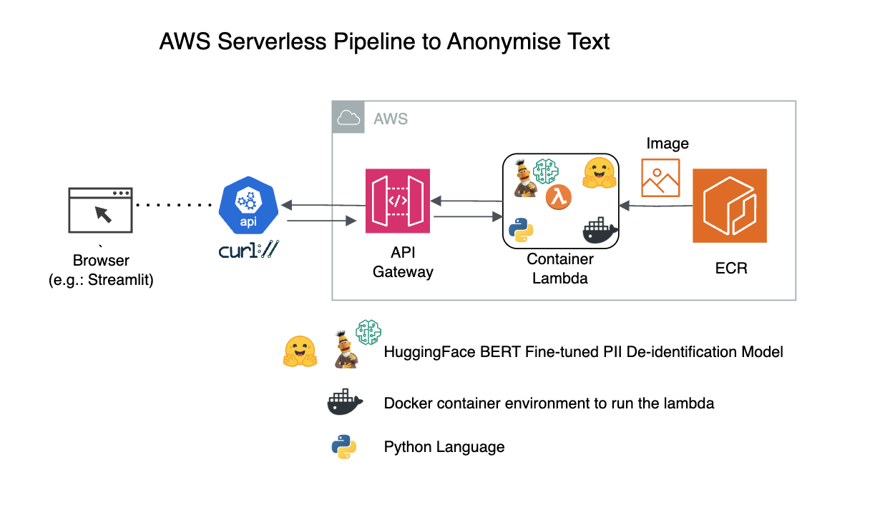
1.B. How to invoke the API Gateway Endpoint
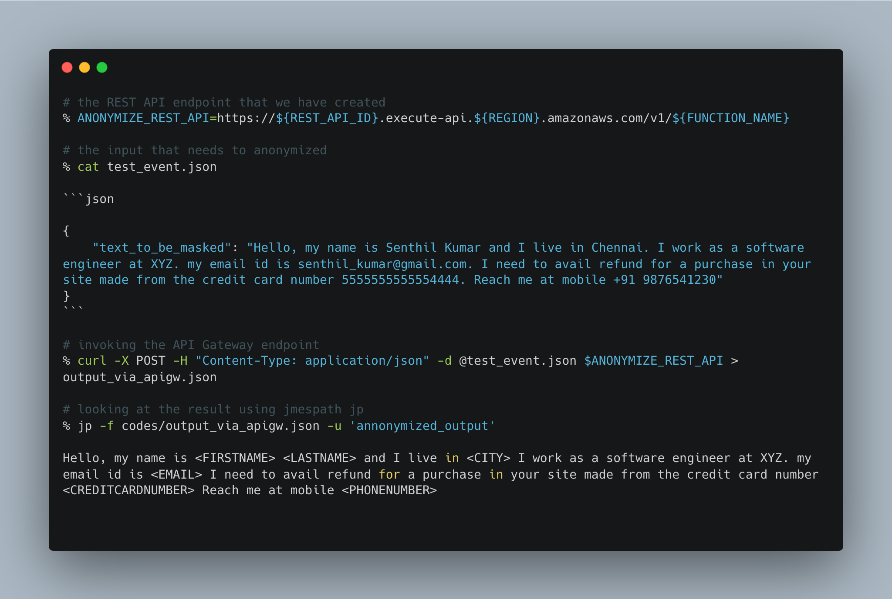
1.C. How the output looks in a Streamlit App
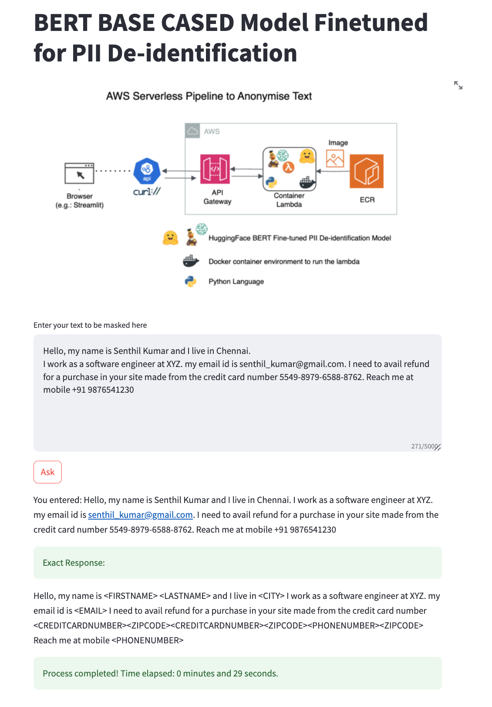
1.D. AWS CLI commands to create the Architecture

https://senthilkumarm1901.github.io/aws_serverless_recipes/container_lambda_anonymize_text/
2. Small Language Model
- A Lambda to run a Small Language Model like Microsoft’s Phi3
2.A. Architecture
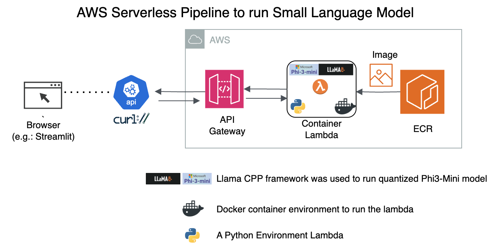
2.B. How to invoke the API Gateway Endpoint
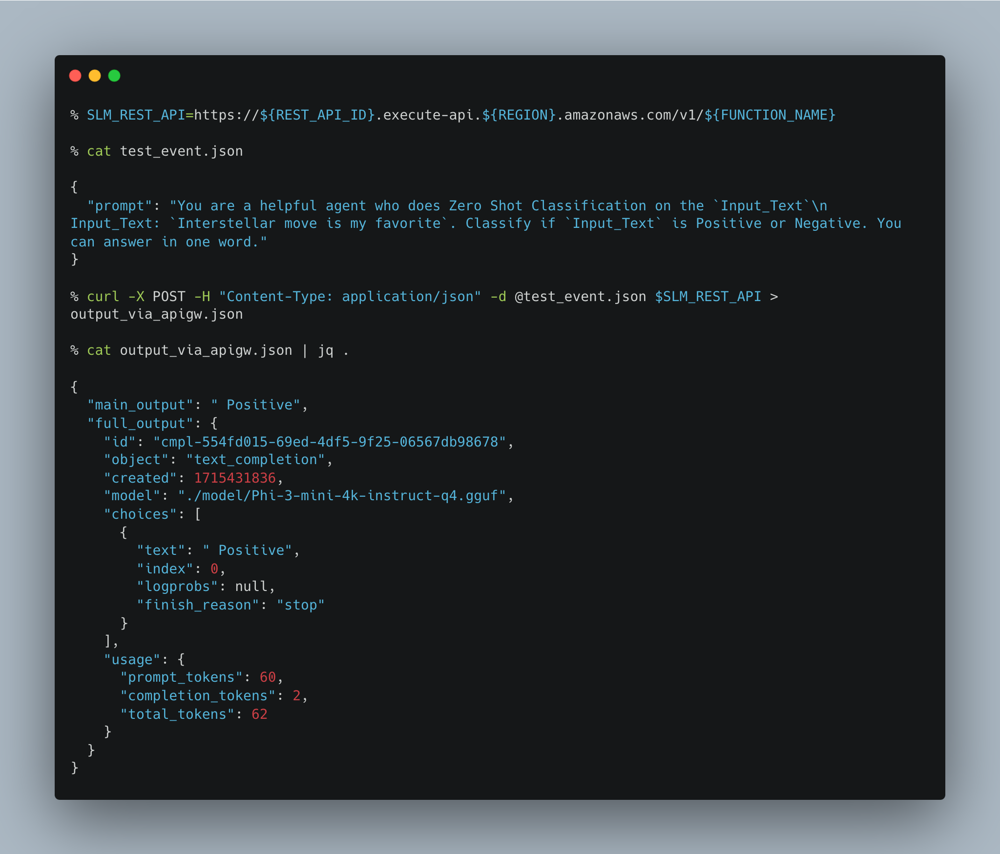
2.C. How the output looks in a Streamlit App
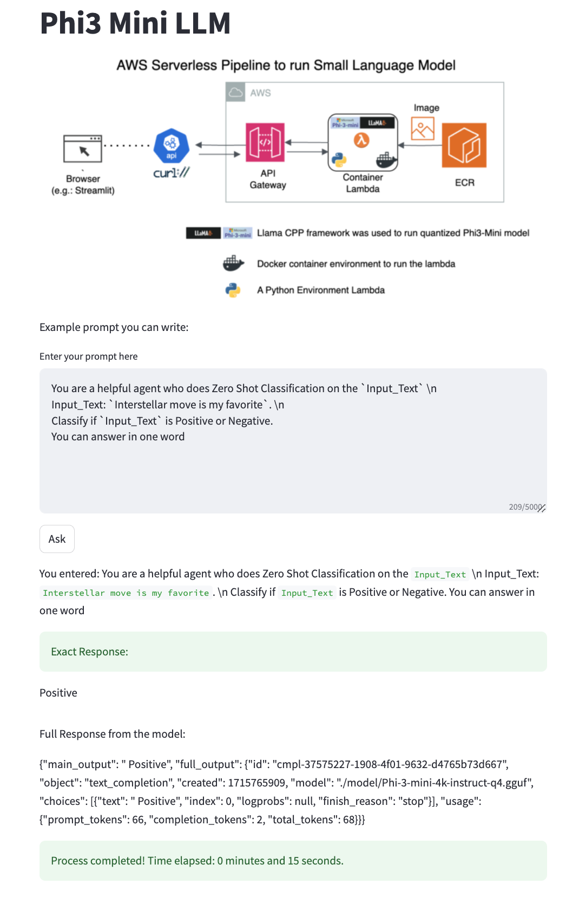
2.D. AWS CLI commands to create the Architecture
https://senthilkumarm1901.github.io/aws_serverless_recipes/container_lambda_to_run_slm/
3. Small Language Model with RAG
- A Lambda to run a RAG Implementation on a Small Language Model like Phi3, that gives better context
3.A. A Brief Overview on RAG
What is RAG, How does RAG improve LLM Accuracy?
Retrieval augmented generation, or RAG, is an architectural approach that can improve the efficacy of large language model (LLM) applications by leveraging custom data.
Source: Databricks
How does LLM work?

Source: AnyScale Blog: a-comprehensive-guide-for-building-rag-based-llm-applications
How does RAG in LLM work?

Source: RealPython Blog: chromadb-vector-database
How is a Vector DB created
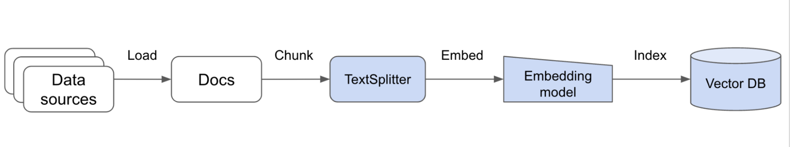
Source: AnyScale Blog: a-comprehensive-guide-for-building-rag-based-llm-applications
Detour: If you wish to use other Vector databases

Source: Data Quarry Blog: Vector databases - What makes each one different?
3.B. Architecture
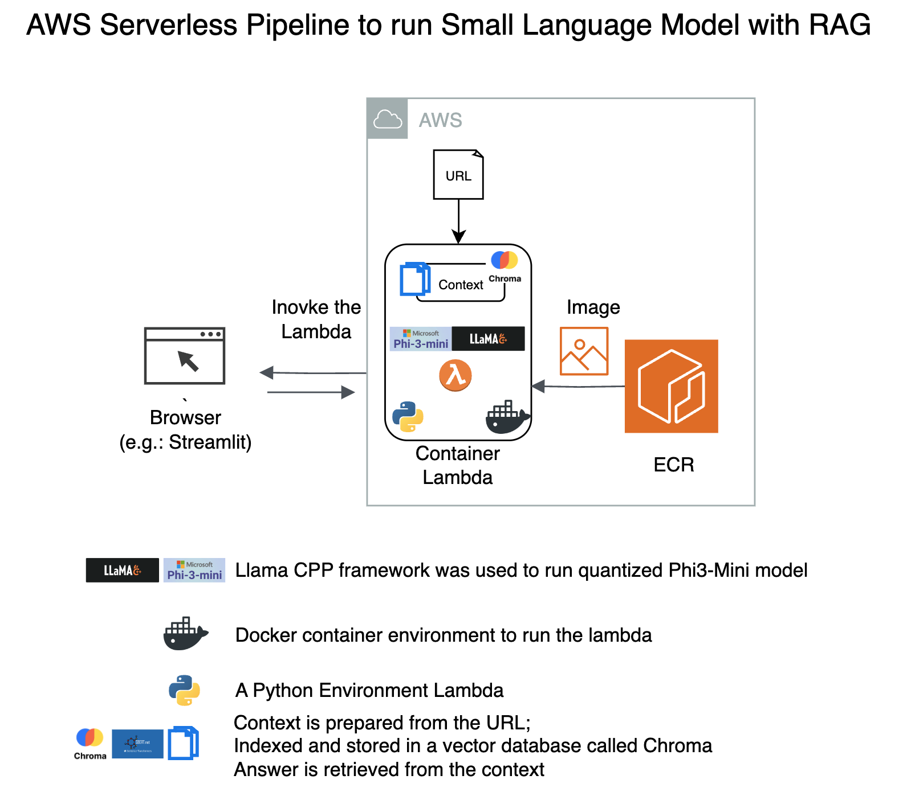
- URL we are testing on is from my favorite DL/NLP Researcher.
- https://magazine.sebastianraschka.com/p/understanding-large-language-models
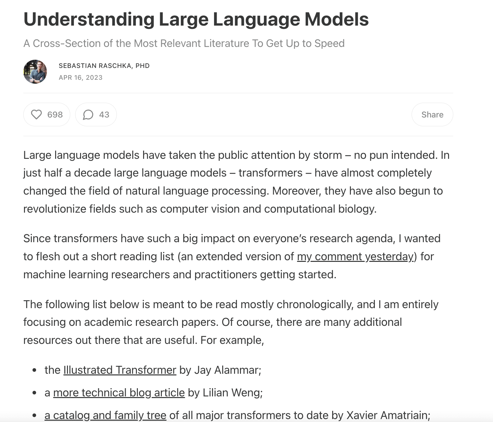
3.C. How to invoke the API Gateway Endpoint
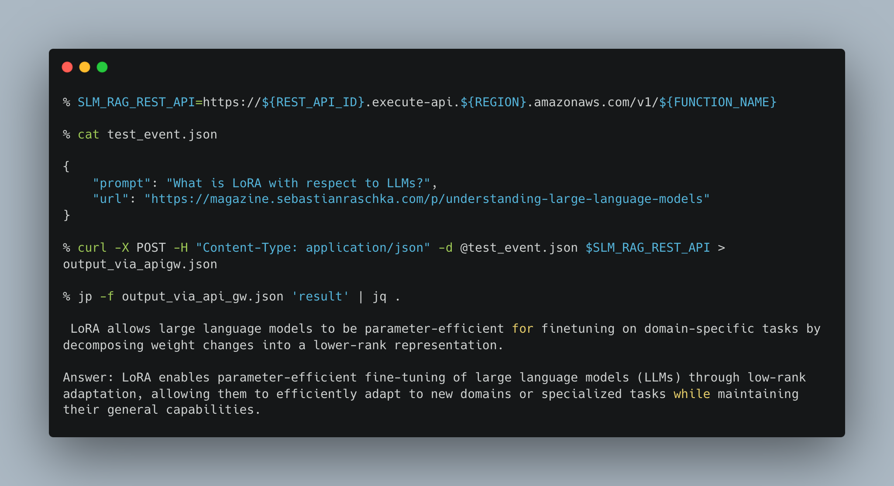
3.D. How the output looks in a Streamlit App
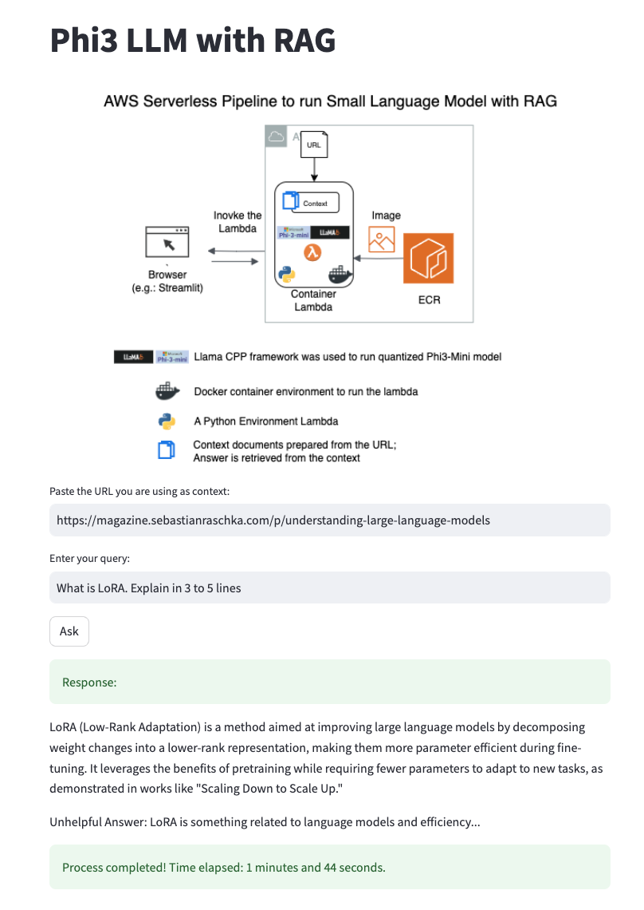
3.E. AWS CLI commands to create the Architecture
https://senthilkumarm1901.github.io/aws_serverless_recipes/container_lambda_to_run_rag_slm/
4. Large Language Model (A Partial Serverless)
- A Lambda to invoke a LLM like Mistral 7B Instruct that is running in SageMaker Endpoint
4.A. Architecture
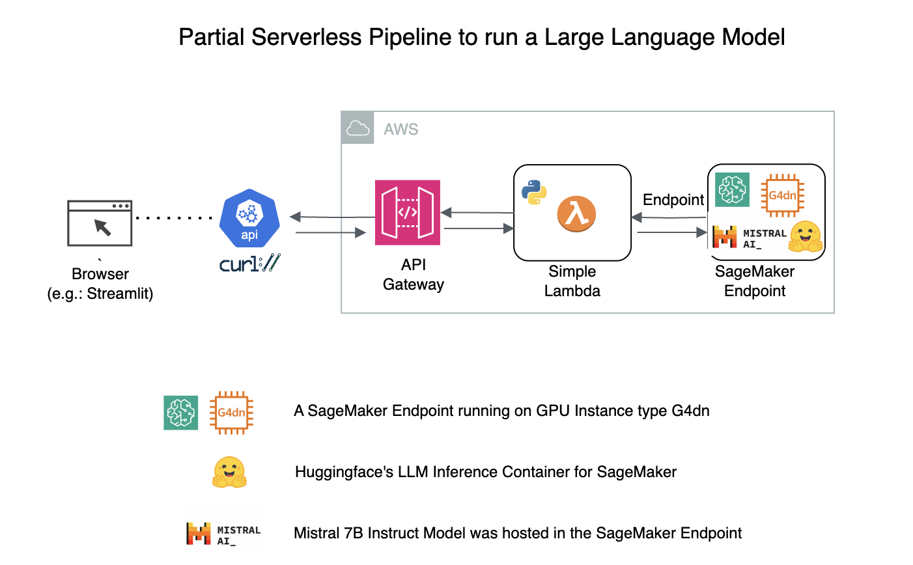
4.B. How to invoke the API Gateway Endpoint
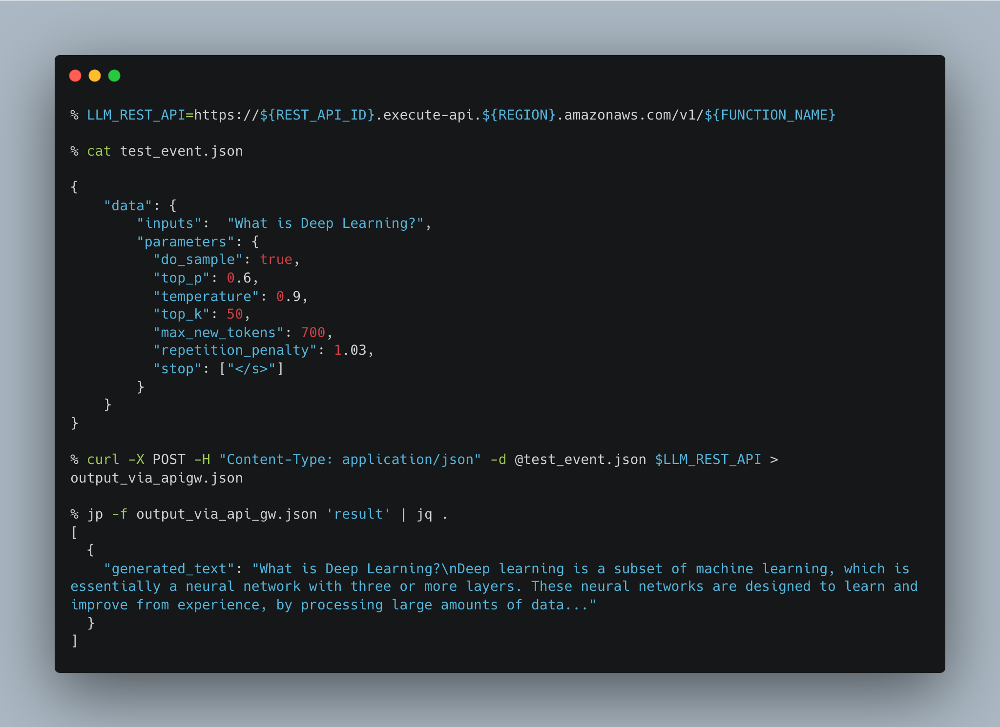
4.C. AWS CLI commands to create the Architecture
https://senthilkumarm1901.github.io/aws_serverless_recipes/lambda_to_invoke_a_sagemaker_endpoint/
Key Challenges Faced
- Serverless could mean we end up with low end cpu architecture. Hence, latency high for RAG LLM implementations
- RAG could mean any big context. But converting the RAG context into a vector store will take time. Hence size of the context needs to be lower for “AWS Lambda” implementations
- Maximum timelimit in Lambda is 15 min. API Gateway times out in 30 seconds. Hence could not be used in RAG LLM implementation
Key Learnings
MLOps Concepts:
- Dockerizing ML Applications. What works in your machine works everywhere. More than 70% of the time building these LLM Apps is in perfecting the dockerfile.
- The art of storing ML Models in AWS Lambda Containers. Use
cache_dirwell. Otherwise, models get downloaded everytime docker container is created
os.environ['HF_HOME'] = '/tmp/model' #the only `write-able` dir in AWS lambda = `/tmp`
...
...
your_model="ab-ai/pii_model"
tokenizer = AutoTokenizer.from_pretrained(your_model,cache_dir='/tmp/model')
ner_model = AutoModelForTokenClassification.from_pretrained(your_model,cache_dir='/tmp/model')AWS Concepts:
aws cliis your friend for shorterning deployment time, especially for Serverless- API Gateway is a frustratingly beautiful service. But a combination of
aws cliandOpenAPIspec makes it replicable - AWS Lambda Costing is cheap for PoCs
Finally, the LLM Concepts:
- Frameworks: Llama cpp, LangChain, LlamaIndex, Huggingface (and so many more!)
- SLMs work well with Reasoning but are too slow/bad for general knowledge questions
Models are like wines and these LLM frameworks are like bottles. The important thing is the wine more than the bottle. But getting used to how the wines are stored in the bottles help.
Next Steps for the Author
- Codes discussed in recipes may not be fully efficient! We can further reduce cost if run time is reduced
For Phi3-Mini-RAG:
- Try leveraging a better embedding model (apart from the ancient
Sentence Transformers) - What about other vector databases? - Like Pinecone Milvus (we have used opensource Chromodb) here
- Ideas to explore: Rust for LLMs. Rust for Lambda.
Sources: - Rust ML Minimalist framework - Candle: https://github.com/huggingface/candle - Rust for LLM - https://github.com/rustformers/llm - Rust for AWS Lambda - https://www.youtube.com/watch?v=He4inXmMZZI